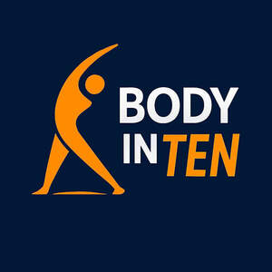

Trade Mark Journal No.2025/020 16 May 2025
UK00004197493 1 May 2025 (3,9,25,35,41,44)

- Class 3
- Massage oils; Massage oil; Massage waxes; Massage oils and lotions; Massage oils, not medicated; Massage creams, not medicated; Body massage oils; Aromatherapy lotions; Massage gels other than for medical purposes.
- Class 9
- Mobile apps; Application software for mobile phones; Mobile phones; Mobile software; Software for mobile phones; Mobile application software; Application software for mobile devices; Downloadable software applications for mobile phones; Downloadable mobile applications; Downloadable applications for use with mobile devices; Downloadable applications for mobile devices.
- Class 25
- Clothing; Knitwear [clothing]; Jackets [clothing]; Gloves [clothing]; Clothes; Aprons [clothing]; Shorts [clothing]; Hoods [clothing]; Embroidered clothing; Rainproof clothing; Casual clothing; Waterproof clothing; Jackets being sports clothing; Bottoms [clothing]; Leisure clothing; Sports clothing; T-shirts; Short-sleeved T-shirts; Shirts; Printed t-shirts; Long-sleeved shirts; Short-sleeved shirts; Short-sleeve shirts; Tee-shirts; Polo shirts; Casual shirts; Sweatshirts; Sweatpants; Beanie hats; Beanies; Bobble hats; Knitted caps; Cap visors; Cap peaks; Peaks (Cap -); Caps [headwear]; Caps being headwear.
- Class 35
- Advertisement via mobile phone networks; Retail services connected with the sale of clothing and clothing accessories; Merchandising; Product merchandising; Merchandizing; Preparing promotional and merchandising material for others; Marketing; Sales promotion; Advertising and marketing; Advertising, marketing and promotion services; Marketing, advertising and promotion services; Publicity and sales promotion; Publicity and sales promotion services; Advertising, marketing and promotional services; Advertising, promotional and marketing services; Marketing, advertising, and promotional services; Product marketing; Sales promotion through customer loyalty programs.
- Class 41
- Education; Health education; Education and training; Education and instruction; Education services; Education, teaching and training; Training and education services; Education and training services; Education and instruction services; Medical education services; Tuition; Tuition in osteopathy; Tuition in acupuncture; Tuition in sports; Health and wellness training; Health and fitness training; Education in the field of occupational health and safety; Entertainment; Entertainment services; Education, entertainment and sports.
- Class 44
- Massage; Massages; Massage services; Acupuncture; Acupuncture services; Osteopathy; Physiotherapy; Massage and therapeutic shiatsu massage; Health care relating to osteopathy; Sports massage; Cupping therapy; Cupping therapy services.
Rising Health Limited